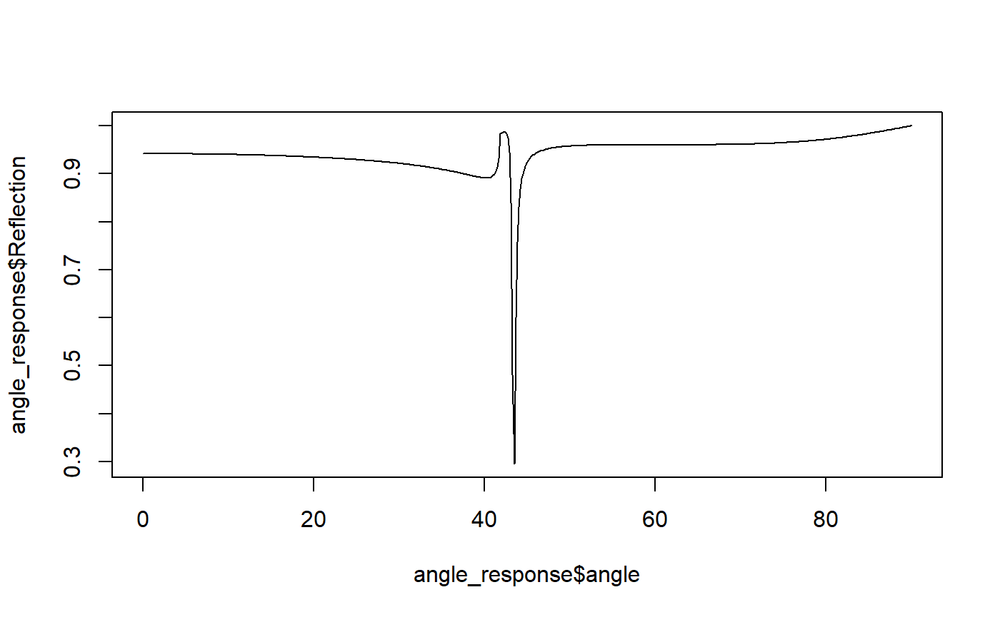
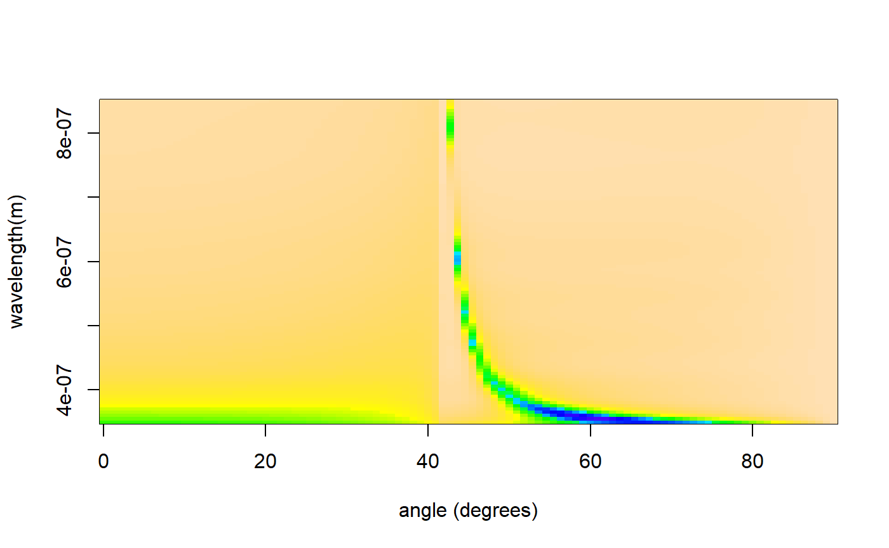

The rindex package is designed to follow the same conventions as the mlfilms package for ease of interoperability. The mlfilms package calculates the optical response of a material fora stack of thin films.
As an example, here we import silver’s wavelength-dependant refractive index to get the expected reflection from a thin silver film on a prism
First, we search for a silver refractive index set in the database, and in this example choose the reported values of silver from Johnson & Christy to create a refractive index function,
library(rindex)
head(rindex.search("Ag")) # using head() here just to keep vignette neat.
#> pageid DIVIDER BOOK PAGE
#> 3 1 Ag - Silver Ag Johnson
#> 4 2 Ag - Silver Ag Yang
#> 5 3 Ag - Silver Ag McPeak
#> 6 4 Ag - Silver Ag Babar
#> 7 5 Ag - Silver Ag Wu
#> 8 6 Ag - Silver Ag Wernersilver <- rindex.function(1)
#> Material: Ag
#> Reference: P. B. Johnson and R. W. Christy. Optical constants of the noble metals, <a href="https://doi.org/10.1103/PhysRevB.6.4370"><i>Phys. Rev. B</i> <b>6</b>, 4370-4379 (1972)</a>This creates a refractive index function silver(). This function accepts one parameter, the wavelength(s) in meters, and returns the complex refractive index. For example, at the HeNe wavelength of 633 nm, the refractive index of silver is:
silver(633e-9)
#> [1] 0.059135+4.28104iHere we define the stack to contain a single layer of silver, with a thickness of 40 nm. We then calculate the optical response at a fixed wavelength (defaults to 633 nm) using the mlfilms package.
library(mlfilms)
stack <- list(index = silver, thickness = 40e-9)
angle_response <- angle_scan(stack, incident_medium.index = 1.5)
#> Warning in check_repetitions(layers): Number of repetitions not specified,
#> defaulting to 1.Plotting the result, we see the characteristic reflection minima of a surface plasmon resonance.
plot(angle_response$angle, angle_response$Reflection, type='l')
To see the dispersive nature of the surface plasmon (due to the wavelegth-dependant refractive index of silver), we can calculate the full response using mlfilms::dispersion_scan() of the same stack.
optical_response <- dispersion_scan(stack, incident_medium.index = 1.5, show.progress = F)
#> Warning in check_repetitions(layers): Number of repetitions not specified,
#> defaulting to 1.
image(x = unique(optical_response$angle),
y = unique(optical_response$wavelength),
z = matrix(optical_response$Reflection, ncol = 100),
xlab = "angle (degrees)", ylab = "wavelength(m)", col = topo.colors(128))